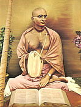

|

|
BHAKTISIDDHANTA SARASVATI THAKURA was the spiritual master of His Divine Grace A.C. Bhaktivedanta Swami Prabhupada, the Founder-Acarya of ISKCON. Srila Bhaktisiddhanta Sarasvati Thakura powerfully spread the teachings of Lord Caitanya Mahaprabhu in the early twentieth century. He preached strongly against the deep-rooted influences of caste-ism and impersonalism. Meeting with scholars, educators, and other leaders and writing over 108 essays and books, he strove to present Krsna consciousness as a science to be highly esteemed. He established 64 temples, known as Gaudiya Maths, inside and outside of India. | |
| © 2002-2004 ISKCON |